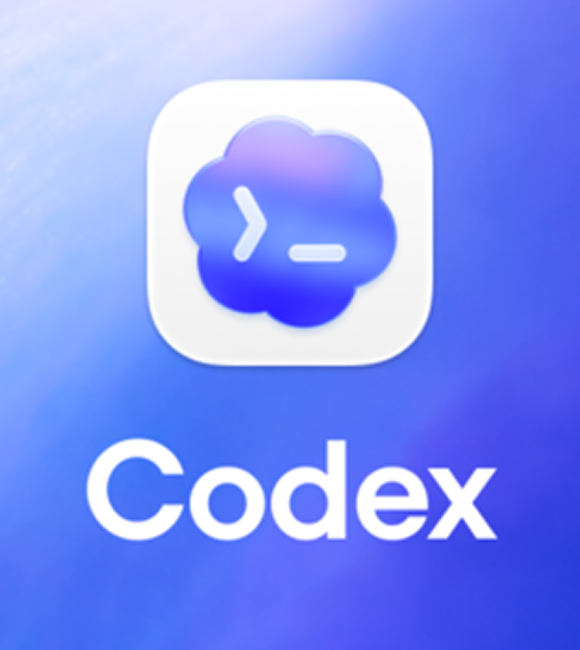
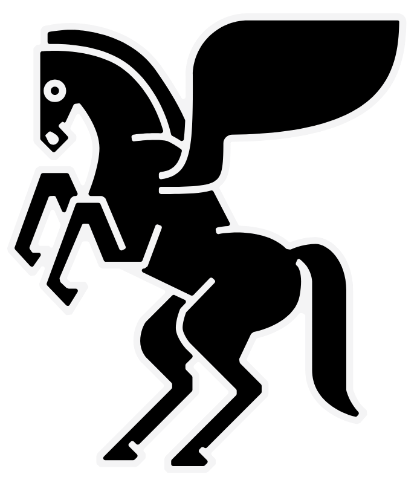
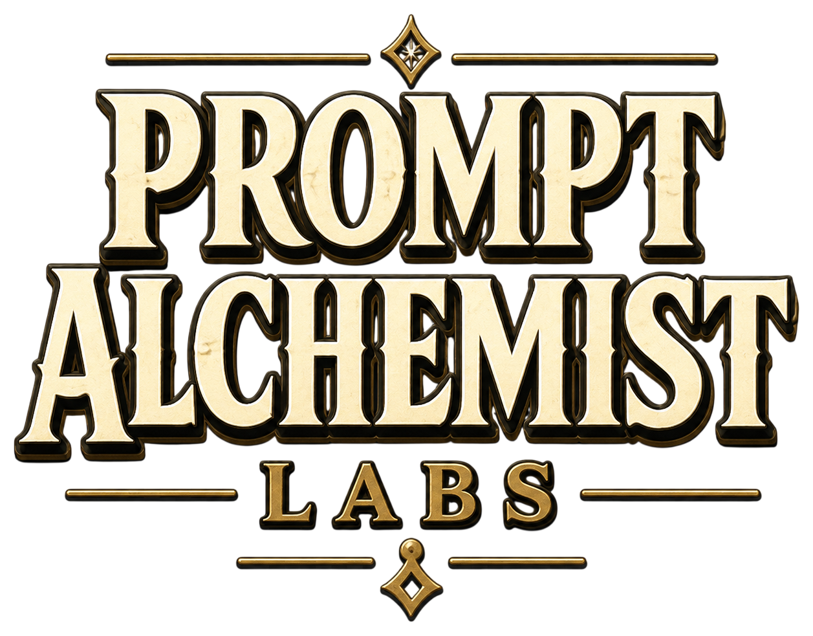
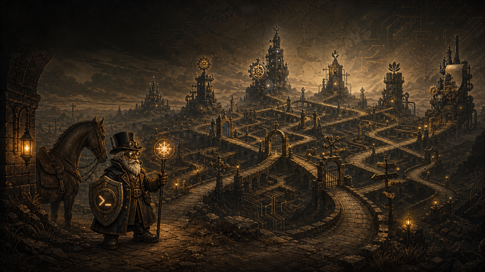
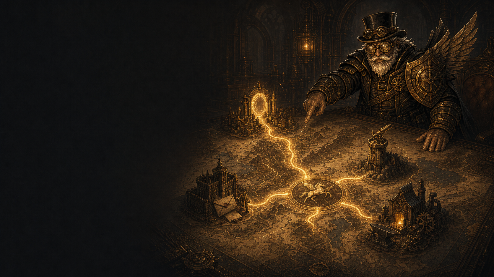
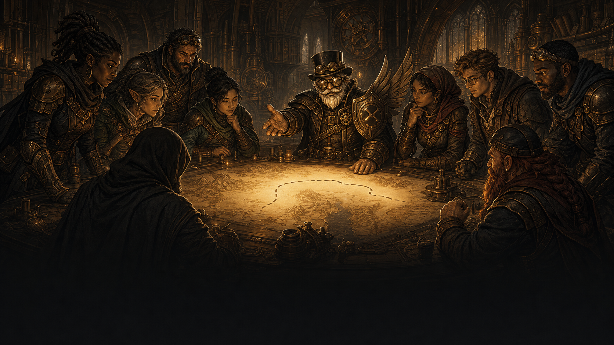

Introduction to Zo Computer
Orin’s
Journey
A mercenary. A vast kingdom.
A new way to move.
Field notes by Sayyid Khan
Built with



The Sheikh & the Paladin
Who’s who in the kingdom
Hi, I’m Sayyid.
At work
Full-Stack GenAI / Agentic AI Engineer at Sembcorp
Outside work
Hackathon builder · NUS mentor
In this tale
I set the quest. Orin takes the road.
Sayyid
Sheikh of the PAL Kingdom
Orin
Travelling dwarf-paladin mercenary
Connect on LinkedIn
linkedin.com/in/sayyidkhan92

Before Zo
Orin has a mission.
The kingdom has friction.
Every handoff adds distance.
Idea
Chat
Copy
Configure
Deploy
Maintain
The Pegasus arrives
Then Orin finds a new harness
“Zo is AWS
for your mum.”
Ben Guo · Zo co-founder
A personal AI cloud computer
Build · automate · host · remember
From prompt to outcome
What this unlocks
Sayyid names the destination.
Zo helps Orin reach it.
01
Describe
“Build this idea”
02
Build
Code + files
03
Run
Work continues
04
Host
Share a live URL
05
Notify
Text or email
Not just AI that writes—AI that acts inside a persistent environment.
Why I chose Zo
01
Conventional VPS
A powerful horse
- Provision
- Configure
- Secure
- Deploy
- Maintain
Control ↑ Setup ↑
vs
02
Zo Computer
A Pegasus with a harness
- Describe
- Iterate
- Automate
- Publish
Outcome speed ↑ Setup ↓
The decision framework
No silver bullet
Choose the mount
for the mission.
Reach for
Zo
- 01Fast prototypes and experiments
- 02Persistent AI context
- 03Scheduled agent workflows
- 04Build and publish in one place
Reach for a
VPS
- 01Full infrastructure control
- 02Highly custom architecture
- 03Stricter enterprise requirements
- 04Optimised compute at scale
My default
Zo for the 0→1 journey.

From computer → operator
01
Ship a live page
Describe the idea → publish a working page
02
Watch the market
Recurring research → send me the brief
03
Handle the follow-up
Emails, reminders and next steps
04
Prototype a small tool
Test one workflow before building full SaaS
One place to keep the context, tools and workflows together.

Who this is for
The invitation
Anyone with a problem to solve—
not necessarily a server to manage.
Foundersvalidate
Creatorssystemise
Marketersautomate
Operatorsremove friction
Curious buildersexperiment
Your use caseExplore with Zo
Put the ball in their court
01
What do you enjoy doing in your daily life?
Where does your energy and judgement matter?
02
What do you not enjoy doing in your daily life?
What would you happily never do manually again?
Your second list is your map.
Pick one task → explore it with Zo.
Orin’s lesson
Don’t just ride faster.
Give yourself wings.
Zo reduces the distance between
an idea and a running system.
What will you explore first?
zo.computer
Orin’s Journey